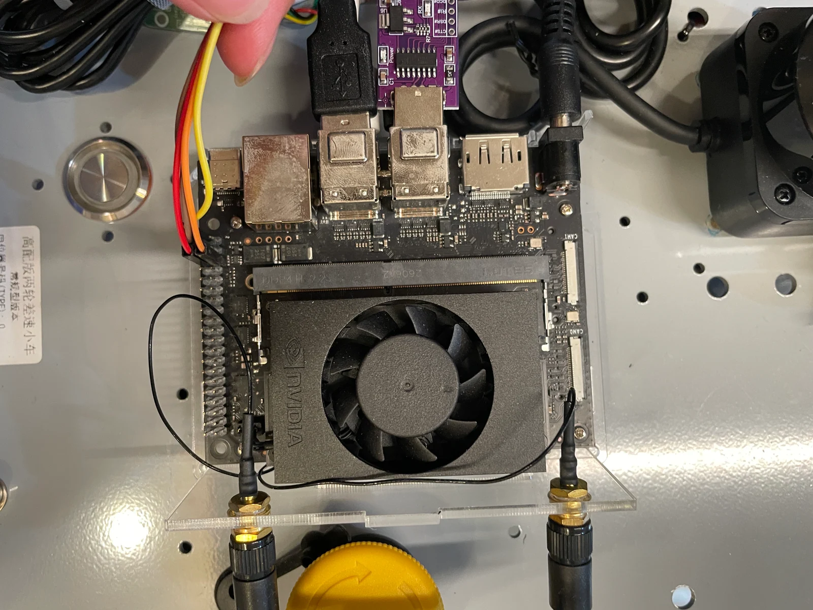

Robotics / Independent development
From a chassis
to a system.
My autonomous mobile robot development platform.
Assembled and
joystick-controlled. Advanced autonomy in progress.
01 Independent development platform
Autonomous Mobile Robot
Development Platform.
I assembled a 24V two-wheel differential-drive robot as a reusable base for development. An early application idea evolved into a platform for different sensors, perception models, and mechanisms.
The physical robot exists and can be driven. Current work connects power, geared motors, encoders, embedded control, Jetson compute, and ROS 2 communication.
Assembled · joystick control
02 AMR system architecture
System architecture — conceptual. Not derived from CAD.
Hardware.
Software.
One platform.
- Drivetrain
- Two-wheel differential drive · 24V / 60W geared motors · AB encoders
- Control
- STM32 · motor and encoder integration · proportional speed control · joystick / joy commands
- Compute
- Jetson Orin Nano Super 8GB · Ubuntu · ROS 2 Humble
- In progress
- LiDAR · camera / YOLO · SLAM · localization · Nav2 · obstacle avoidance · autonomous navigation


